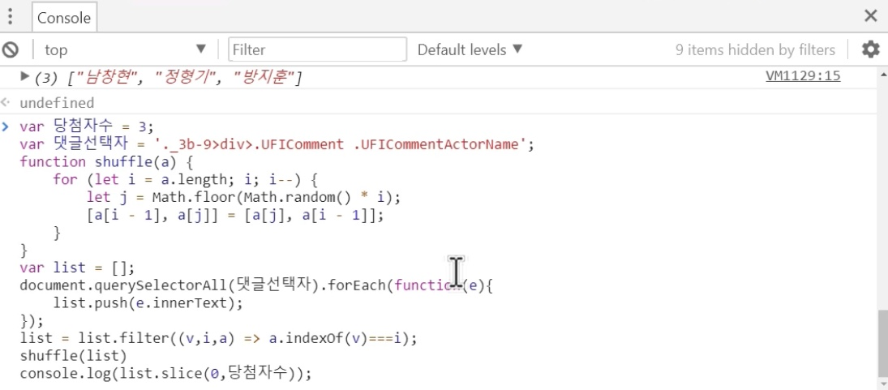

JavaScript
HTML 위에서 작동하는 언어
JS를 HTML에서 사용하는 방법
1. <script> 태그를 사용하여 HTML에 해당 코드가 JS라는 것을 알린다
ex) document.write('hello world');
ex) document.write(1+1);
2. 특정 속성을 사용하여 속성값으로 JS언어를 사용한다
ex) <input type="button" value="hi" onclick="alert('hi')>
: onclick 속성의 속성값으로는 JS가 오며, 해당 속성값은 웹브라우저가 기억하고 동작한다
3. 콘솔(consol) 이용하기
ex) 데이터를 계산해야하는 경우 등에 간단하게 사용해볼 수 있다
ex) alert('(문자열)')'(문자열)'.length

이벤트
onclick : 클릭 이벤트
onchange : 내용이 변하는 이벤트
onkeydown : 키가 눌리는 이벤트
데이터 타입
Mojila
Number
- 연산을 할 수 있다
String
- "" 혹은 '' 안에 입력하여 표현한다
- 문자열 끝에 .length를 붙여 글자수를 알 수 있다
- .toUpperCase()로 소문자를 대문자로 바꿀 수 있다
- .indexOf('character')를 사용하여 해당 문자가 처음 나오는 인덱스를 알 수 있다
변수와 대입 연산자
var x = 1;x : 변수, 1 = 대입 연산자
ex) name이라는 변수에 'bdy'를 저장하고, 사용할 때는 "+name+"과 같은 형태로 변수를 사용할 수 있다
JS로 제어할 태그 선택하기
* 검색해보자 "javaScript select tag by css selectorr"
=> element = document.querySelector(".myclass");
* 검색해보자 "javascript element style"
=> document.getElementByyId("myId").style
조건문
아래와 같은 형태로 작성한다
if(true){ }
else{ }
배열
아래와 같은 형태로 배열을 생성한다
var 배열명 = ["값1", "값2", "값3"];
아래와 같은 형태로 데이터를 활용한다
document.write(배열명[0]);
아래와 같이 배열값의 갯수를 알아낸다
document.write(배열명.length);
아래와 같이 배열에 값을 추가할 수 있다
배열명.push("값4");
다른 다양한 기능들도 활용할 수 있다
함수
function을 사용하여 함수를 만든다
function 함수명() {함수의 내용}
함수를 실행할 때는 아래와 같이 사용한다
함수명();
객체
- 서로 연관된 함수와 변수를 그룹핑하여 정리정돈의 수단으로 사용할 수 있다
- 객체에 포함된 함수는 method(메소드)이다
- 오퍼레이트(.)를 사용하여 객체 내 데이터를 가져오거나 추가할 수 있다
var 객체명 = {
"약칭1":값1
"약칭2":값2
};
...
document.write(객체명.약칭1); <- 데이터 불러옴
객체명.약칭3 = "값3" <- 새로운 데이터 추가
객체명[약칭4(공백포함 가능)] = "값4" <- 새로운 데이터 추가
- 객체 내 데이터에 순회하며 접근할 수 있다
for(var key in 객체명) {
document.write(객체명[key]+'<br>');
}
- Property & mEthod
객체명.함수명 = function(){
for(var key in this){
document.write(this[key]+<br>);
}
Library & Framework
라이브러리 - 가져와서 사용
ex) jQuery
프레임워크 - 프레임워크 안에서 수정하며 사용
UI vs API
UI : 사용자가 사용하는 조작장치(User Interface)
API : 경고창같은 것들. 웹브라우저 제작자들이 미리 만들어둠